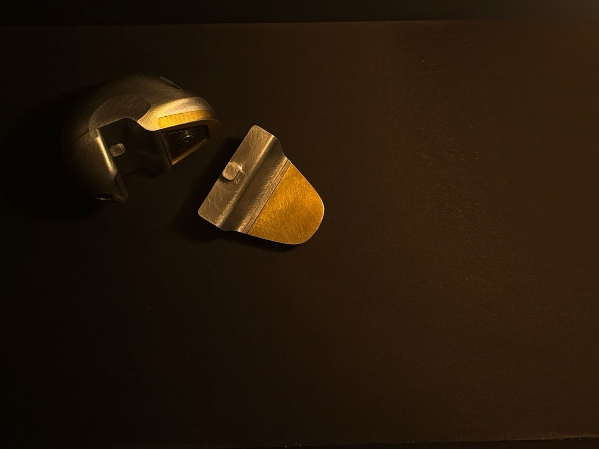
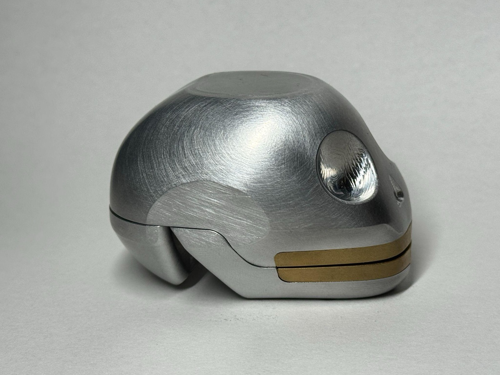
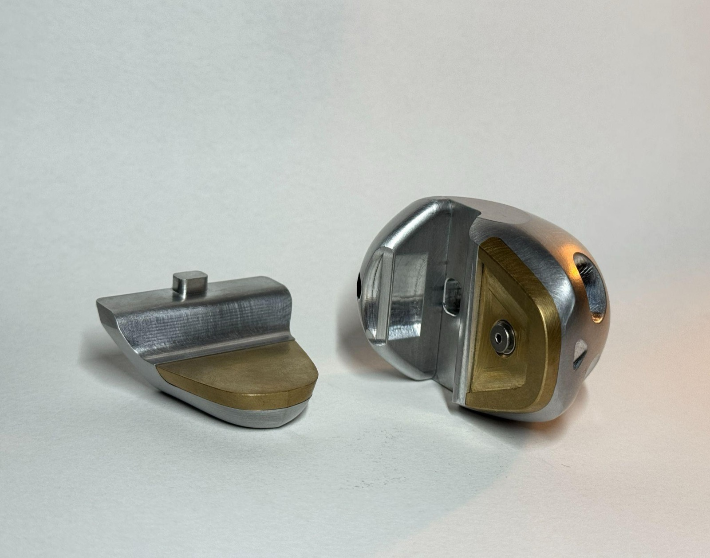
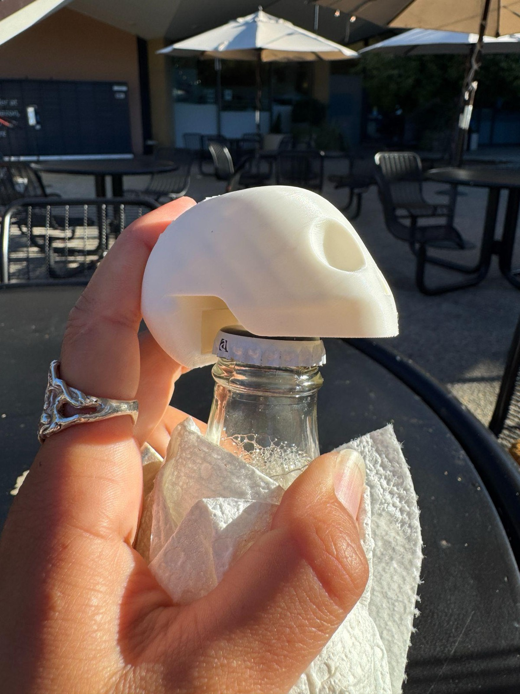
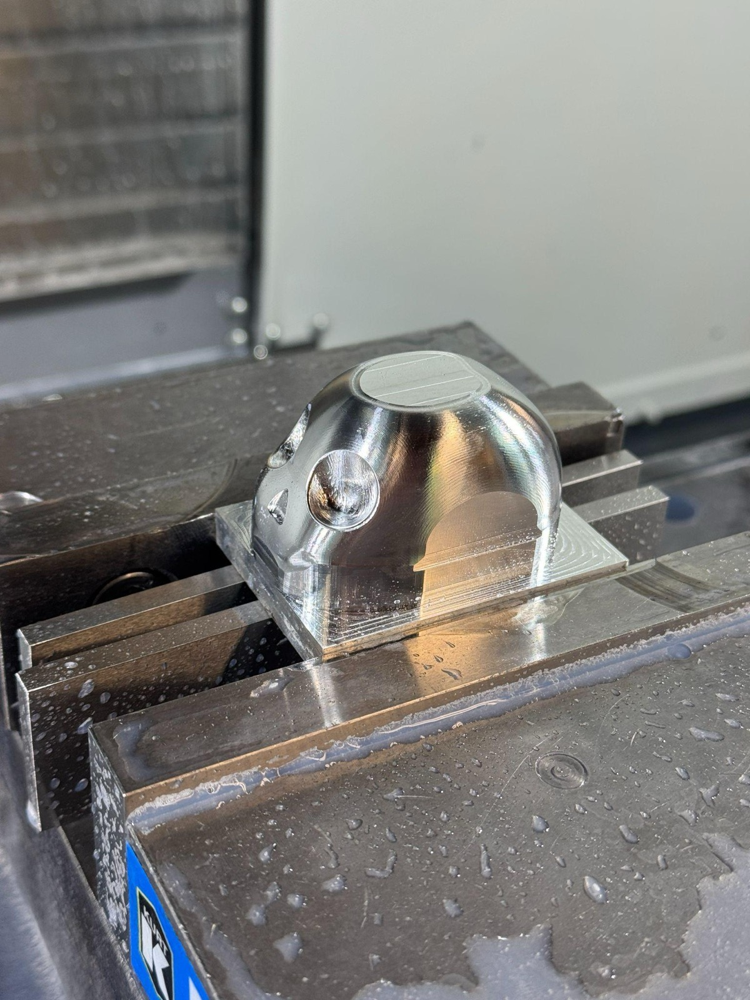
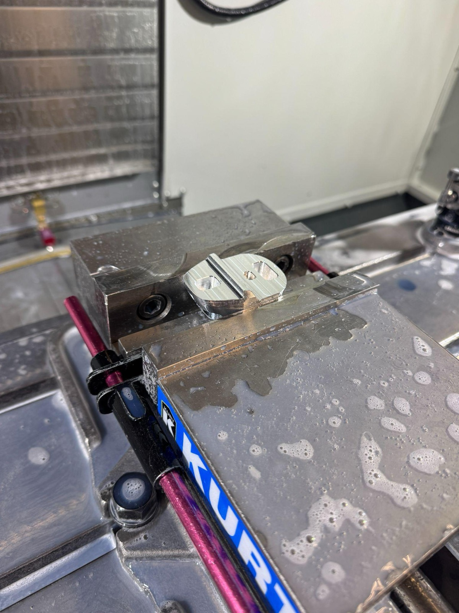

El Destapamuertos — Machined Bottle Opener
2026
El Destapamuertos is a bottle opener I designed and machined for ME 318 at Stanford. The design is inspired by the sugar skulls of Día de los Muertos. The jaw detaches from the skull, and the geometry hidden inside the mouth hooks under the bottle cap so the skull bites the cap off the bottle.
I designed the skull in Fusion 360. The final piece is CNC machined from aluminum with brass accents on the teeth and jaw. It is made up of 5 parts machined across 10 setups on a 3-axis Haas VF-2 CNC mill, including double-sided machining and machining multiple parts together using alignment features and fasteners.





